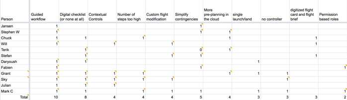

Business Context
This project came about after a high-level shift in company strategy. We stopped making our own hardware and vehicles, and doubled down on the software side of our business to meet the demands of a rapidly-evolving early market. Instead of selling hardware to OEMs, we would be using a SaaS model to engage with large enterprises directly. That meant that our product would now be serving a different, less tech-savvy group of users.
The existing operator system required an Android phone, Windows laptop and a 100+ item checklist. We had already been hearing anecdotal feedback that it was difficult to set up and use, and that was coming from highly-skilled operators. We knew that a dramatic change would be necessary to support our new user base so we set out to explore our options.
Research
Training Observation
The first order of business was to more fully understand the shortcomings of the existing system. One of our team members traveled to Arizona to attend a few of the 3 day training sessions that we would host to get new operators up-to-speed. He recorded a number of qualitative and quantitative observations, giving us a solid baseline to compare any future designs against.
Internal Operator Interviews
Next we had our own operators, who were very familiar with the existing system, walk us through through real-world workflows. We used contextual inquiry to learn about what they liked and didn’t like about the system. Afterwards we looked at our notes tallied up the the list of the concepts that were mentioned most frequently in the interviews.
We immediately noticed some distinct patterns. Nearly every person we talked to mentioned that the current software gave them no indication about what to do next when a process was compete. They relied on their training to get through but they were craving a more “stepped” process where they would be walked through the workflow and reminded of what to do next. We also picked up on the general sentiment that the system was too complicated and rather than helping, the paper checklists were actually making operations more difficult.
Competitive Analysis
We also surveyed the competitive landscape to see how other companies were approaching their drone operations. We tested as many apps as we could and documented our observations. The most glaring difference was that most other companies were using standalone mobile apps, which did not require a laptop in the loop like our system. We also learned quite a bit about different approaches to flight planning, pre-flight checks, and post-flight data transfer.
Early Iterations
Paper Prototypes and Storyboards
Before jumping right into the UI Design of the operator software, we took care to think holistically about the experience of operating a drone. We knew from our research that some of the most significant pain points in the workflow were not directly addressable by software.
We explored a wide range of operational concepts by drawing out storyboards and creating paper prototypes of the software and equipment. We used these to walk ourselves through the end-to-end process, and to get early feedback from internal stakeholders.

Wireframes
Once we had a solid concept of operations, we moved to the next level of detail and started to lay out the application. We first focused on the overall structure and navigation, then began to work through some of the off-nominal scenarios.
One of the unique things about the application we were building was it’s connection to our cloud software. Operators would be assigned a “job” from the cloud, they would collect the necessary data with the drone, and then upload that data back to the cloud. We had to work through a number of issues with roles and permissions to make this process work seamlessly. We also iterated on things like the pre-launch checks, the in-flgiht controls, and post-flight data transfer.
Proof of Concept
Once the initial framework was in place, we built a quick proof of concept application to test our assumptions and prove out the technical feasibility of the idea. It was a valuable learning experience and it helped us win the internal support we need to move forward with a purely mobile solution. We learned about the limitations and the quirks of the SDK we were working with and uncovered a number of UX issues that we set out to resolve.
Technical Learnings
- Transferring large data sets (up to ten thousand images) over the radio link was practically impossible. Even importing this much data via an SD card proved to be a time-consuming and computationally intensive process.
- We could not precisely predict how long a flight will take due to wind and other environmental conditions. Our early designs prominently featured a progress bar and time countdown, which we had to abandon in favor of a slightly “fuzzier” progress tracking UI.
- We displayed health metrics like the radio link and GPS signal strength that proved to be unhelpful to operators. Instead of displaying them at all times we switched our approach to only surface these values when they dipped beneath a critical threshold and the operator needed to take action.
Usability Learnings
- Screen real estate on the phone was limited and operators were straining to read text and keep track of the vehicle.
- We chose a dark UI theme which proved to be terrible for sunlight readability - it basically turned the screen into a mirror. You’ll notice in the final designs we switched to a high-contrast, black on white palette.
- Polygon editing on a touch screen was painstaking. We mitigated this by increasing the size of all of the controls and auto-generating polygons that the user could edit, rather than having users draw them from scratch.
Final Designs
High-fidelity Mockups
While the prototype we built and tested was made for an Android phone, the production version of the app would be built on iOS and we would be optimizing it for the iPad. This was because the iOS SDK’s were better supported by vehicle manufacturers and the iPad offered us more screen real estate and computational power.
We went through and laid out every screen in the app and took care to uncover every state that the user could find themselves in: error states, empty states, loading states, etc. Once we had everything laid out we went through and polished the visual design, making sure that we were consistent with our spacing, typography and choices of color. We wanted to establish a visual system that was not only beautiful, but extensible. We wanted to set the Engineering team up to quickly build new features and extend the app after it launched.
We switched from Sketch to Adobe XD for this project because of how easy it was to create clickable prototypes with XD. Due to the highly interactive nature of this project, this was very important to us. We used the clickable prototypes to get feedback on the designs and to communicate progress with internal stakeholders throughout the process.
Release
In the weeks leading up to the release of the app we worked closely with the PM and Engineering teams to prioritize work in order to ensure that we met our deadline. We also worked with the Flight Ops and QA team as they put the app through progressively more rigorous tests and continued to make minor tweaks to the design based on what we were learning in the field. We all wanted the app to be as stable and polished as possible, but we recognized that we needed to draw a line in the sand at some point and ship the app to customers in order to get real-world feedback.
We ended up shipping the app to an early set of customer and then put our feet up and relaxed knowing that our job was done… just kidding. After releasing the app we received a flurry of feedback and we worked with the PM team to prioritize and address it. We also assisted our resident Instructional Designer as he created an entirely new training program for the app.
Reflection
The app was met with an overall positive reception both internally and externally. We’ve continued to add features and make it more technically robust. Our largest survey to date was over 750 thousand square feet - that’s about 15 flights worth of data!
Overall it was a unique project and a great learning experience. The most important thing that I will take away from this project is an appreciation for the organizational challenges inherit in a project like this one. In addition to delivering on a design that met the objectives, our team needed to set timelines and stick to them, manage internal feedback and communication, and support the the rest of the teams in the org as we transitioned our customers onto the new app.